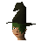
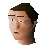

Market
Location at 3090, 3252 · Kingdom Of Misthalin
Open on the world map → Open in knowledge graph →
NPCs
| NPC | Level | Spawns | Notable drops |
|---|---|---|---|
| 33 | 1 | Coins, Steel bar, Iron sword, Mithril arrow | |
| 7 | 2 | Coins, Staff, Nature rune, Chaos rune | |
| 7 | 1 | Coins, Herb drop table, Fishing bait, Bronze arrow | |
| 5 | 2 | ||
| 2 | 4 | ||
| 2 | 1 | Bolt, Wizards hat, Hammer, Ball of wool | |
| 2 | 1 | Coins, Herb drop table, Bolt, Fishing bait | |
| 2 | 1 | Coins, Herb drop table, Bolt, Fishing bait | |
| 1 | 2 | Feather | |
| 1 | 2 | ||
 Aggie | 1 | ||
| 2 | |||
| 2 | |||
| 1 | |||
| shop | 1 | ||
| 2 | |||
 Morgan | 1 | ||
| 1 | |||
| 1 |